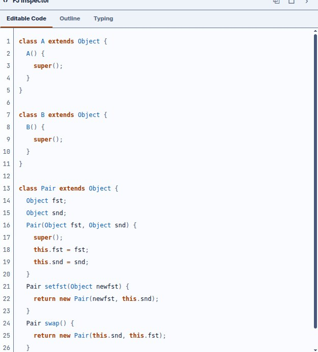

From blocks to Java, and back
Every other chapter treats the block tree as the program. This one is about the other view: BFJ also generates real Java-shaped source text from those same blocks, parses that text back into the same blocks, and proves — not just claims — that the two directions cancel out.
Blocks to text — β
fjPrinter.ts and fjGenerator.ts generate genuine, syntactically-valid
Java source: classes, fields, methods with return, and — the interesting part
— the synthesized canonical constructor written out in full, with its super(…)
call and its this.f = f; assignments for every field.

Pair. The constructor's
super() call and field assignments are generated, not typed.Because well-formed FJ syntax is, by construction, a literal subset of Java syntax, the generated
text is exactly what javac would accept — modulo the class needing whatever
else it references to also be present to compile standalone. Nothing about the printed source is
a simplified or annotated stand-in for the real thing.
Text to blocks — τ
fjTextParser.ts runs the other direction: FJ text in, blocks out. It is what powers
the Editable Code tab's live two-way sync — type into the panel, or drag a block
on the canvas, and the other view updates immediately, in either direction.
This is also how the workbench opens a plain file: opening a .fj or .txt
file imports it straight through this parser into the editable code panel, and from there into
blocks, exactly as if you had typed it in by hand.
The round-trip bijection
The project states and tests this as a genuine formal property, not a rough guarantee: for the printer β and the parser τ,
τ(β(b)) ≡ b -- text-of-blocks, parsed back, is the same block tree
β(τ(t)) ≈ t -- blocks-of-text, printed back, is the same program textIn plain terms: what you build in blocks and what you would type as text are, provably, the same
program, always. This is checked by a dedicated round-trip test suite
(tests/roundtrip.ts), separate from the semantics lockstep suite in
chapter 05.
A round-trip bijection is only as strong as its weakest block. If fj_ctor were
editable, two different constructor block trees could print to the same text, or one piece
of text could parse back to a constructor shape you never actually built — either way,
τ(β(b)) ≡ b would have a counterexample. Deriving the constructor automatically,
covered in Blocks, is precisely what removes that
possibility.